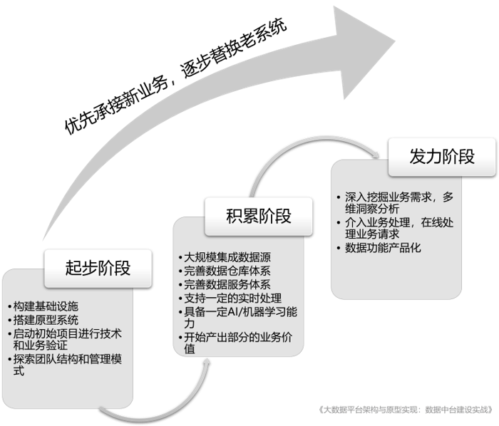
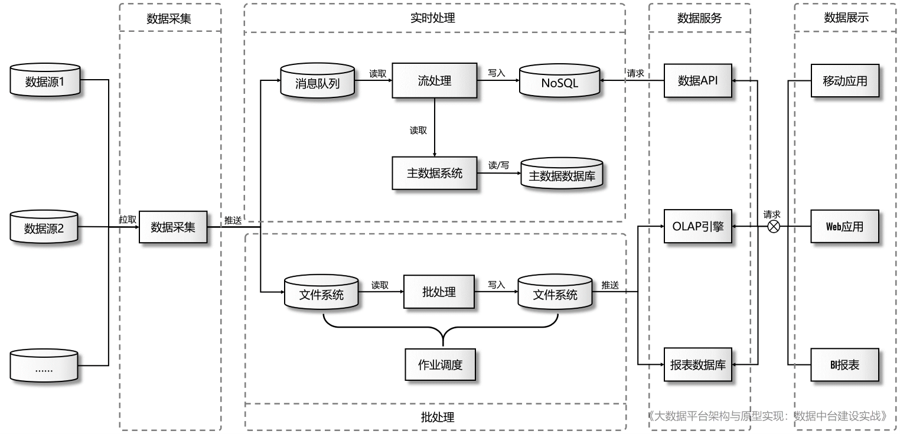

“数据中台”怎么建？| 建设数据中台系列（七）
建设数据中台无疑是一个长期的战略性工作，其建设内容包含了基础设施、技术平台、业务模型、团队建设、管理协作等多种维度上的工作，对于任何一家企业来说都是不小的挑战。本文我们将基于过去的实践经验给出一个实施策略，这个策略是基于大多数企业的数据生态现状给出的，具有很高的借鉴价值。同时，在技术实施层面上，我们会做一个整体性的介绍。本文核心观点援引自作者所著的《大数据平台架构与原型实现：数据中台建设实战》一书，全书对数据中台的理念、架构和具体实现做了详细论述。
1．数据中台的建设策略
数据中台是企业的一个战略性的基础设施，建设周期长，牵涉范围广，从过去的实践中我们总结了一些宝贵的经验，作为中台的建设策略分享给读者。数据中台的建设可以分为三个阶段，如图1 所示。

1）起步阶段：搭建基础设施；
2）积累阶段：汇集数据，确立数据中台的核心地位；
3）发力阶段：基于丰富的数据集和完善的分析模型，产出大量有价值的分析结果，推动业务增长。
下面来分别看一下每个阶段要做的事情和注意事项。
- 起步阶段
起步阶段的首要工作是进行基础设施建设，包括服务器的采购、安装和配置，网络规划，集群搭建，各类工具的安装和调试，资源和权限配置等。自建的IT 团队通常会自行完成这些工作，使用供应商模式的甲方公司可以通过一个大数据项目完成初始的基础设施建设工作。当然，也有的企业会选择使用云上的大数据PaaS 服务，直接跳过基础设施的建设和维护工作。
在有了大数据集群之后，需要通过一个到几个项目来验证平台的各项组件和服务是否能满足业务需求，对于在平台上工作的团队和个人来说也是一个熟悉和磨合的过程。初始阶段应该使用迭代思想，不断地调整平台的技术堆栈、管理模式，为平台以后的发展壮大积累经验。
- 积累阶段
积累阶段是一个相对艰苦而漫长的过程，数据中台的团队要在这个阶段不断地将企业的各个数据源接入进来，逐渐完善数据中台上的数据版图。中台接入的数据越多、越全，就越能发挥出威力，最终的理想状态是企业的全部数据都聚集在中台上，前台的任何数据需求都可以直接或稍做处理即可满足。具体来说，这一阶段需要完成如下工作：
1）广泛对接企业的各个数据源；
2）不断完善数据仓库体系，对企业数据规范管理；
3）不断完善数据服务体系，丰富数据供给的协议和形式；
4）搭建实时处理基础设施，提供部分实时处理服务；
5）搭建人工智能及机器学习基础设施，提供高级数据分析服务；
6）开始实现部分业务需求，产出业务价值。
- 发力阶段
当数据中台的数据版图足够完善时，就会自然地进入发力阶段，这也是数据中台的收获期，在这一阶段，数据中台的优势会体现得淋漓尽致，基于全面和完善的数据体系和强大灵活的数据分析能力，前台和各业务中心对各种数据的需求都可以通过数据中台满足。前台可以集中精力关注业务层面，快速敏捷地实现新业务功能。在发力阶段，团队需要着重开展如下工作：
1）与业务部门和业务中台紧密合作，深入挖掘业务需求，利用丰富全面的企业数据开展多维度的洞察与分析，对业务决策提供强力支持；
2）深度介入业务的在线处理，通过数据中台的实时处理能力解决应用系统很难实现的业务需求（如用户积分的实时计算）；
3）将数据平台上某些成熟的功能产品化，推广到更多部门和业务场景中。
在发力阶段，中台团队也将被锤炼得更加专业和成熟，对于所管辖的数据会更加了解，对对接的业务更加熟悉，这也是中台架构培育出的另一项重要资产：专业的人员和团队。
以上三个阶段是较大时间尺度上的切分，但并不意味着只有前一个阶段彻底完成之后才可以启动后一个阶段的工作，企业可以通过项目的方式驱动数据中台建设，在项目实施过程中可以完成数据采集、处理、存储、分析等一系列工作。每一个阶段又可能会涉及一些基础设施的建设，只要合理地安排好项目计划，有规划、有组织地推进项目开发与平台建设之间的工作，就可以实现长期的战略发展和短期业务需求之间的平衡。另外，数据中台是对既有系统的改造，在建设过程中会面临新业务需求由谁来实现及新老系统将如何更迭的问题，对此我们建议的做法是：
让数据中台优先承接新业务，逐步替换老系统。
意思是说，当有新的业务需求时，如果与原有系统的关联不是很大，应该优先安排在数据中台上实现，因为这可以让数据中台尽快地产生业务价值，帮助企业建立对数据中台的信心，如果只是一味地迁移遗留系统的功能，作为一个持续的投入过程，在业务端很难看到ROI，这对于企业决策者和数据中台团队来说压力是很大的，也是不明智的。
2．数据中台的整体架构与建设内容
完备的数据中台需要涵盖：基础设施建设、平台架构设计、数据采集、主数据管理、实时计算、批处理与数据仓库、数据存储和作业调度等若干重要环节。作为本系列的最后一篇文章，我们将给出一个数据中台的架构参考，这是一种以Lambda架构为蓝本的通用型架构，这个架构曾经历经多个项目验证，稳定、可靠并具有广泛的适用性。

首先，外部数据需要被数据采集组件采集到大数据平台，然后针对实时处理和批处理分别写入消息队列和分布式文件系统两类不同的存储介质上，因此从一开始，原始数据就冗余了两份，然后在实时处理和批处理两条通道上同时对数据进行一系列的验证、清洗、转换和计算。实时处理的计算结果通常会写入一个NoSQL 数据库，以便后续实时查询，批处理的计算结果往往写回分布式文件系统。实时处理和批处理在计算过程中都会用到主数据，批处理可以将主数据系统视为一个数据源，将全部主数据导入大数据平台上使用，这样处理主数据就与处理普通数据无异，架构上无须做改动。但是对于流处理而言，在处理原始数据时需要实时获取主数据，必须要有增强的主数据系统为其提供服务。数据经过处理之后，就需要为外部提供服务了。通俗地说，数据服务就是将处理后的数据提供给请求方，不同的数据供给方式将服务于不同的数据应用。常规的数据服务有：
1）将体量较小的结果集同步到传统关系型数据库，供报表工具或各种应用系统随时查询；
2）通过构建前端API 向前端应用直接提供数据查询服务；
3）通过OLAP 引擎构建Cube，支持实时的、多维度的即时查询。
最后，在数据服务的支撑下，会有一系列的数据可视化工具将数据展示给终端用户。数据可视化工具一般分为两大类：一类是传统的报表工具，另一类是基于Web 的页面或移动端App。前者定制灵活，开发效率高，但是实时性较差，后者需要针对性地开发，定制性较差，成本较高，但是实时性好。
3．数据中台的具体实现
目前，介绍中台和数据中台方法论的图书和文章比较多，但是介绍如何具体实现的资源却很少。一方面，数据中台的架构体系庞大，技术堆栈非常深，另一方面，在很多细分领域（例如实时计算、作业调度）也没有像样的工程模板，这导致很多团队在启动数据中台建设时往往感到无所侍从，也使得希望深入学习大数据技术的开发者由于缺少工程级的示例参考而感到迷茫。
如果在数据中台领域有基于最佳实践提炼出来的工程原型，帮助团队快速启动开发，上手就写业务代码的话，相信会对从事企业数据平台建设的读者来说有很大的帮助，而《大数据平台架构与原型实现：数据中台建设实战》就是以此为目标创作的。实际上，本系列前面文章的一系列观点和建议也均来自于该书。实现数据中台是一个宏大而复杂的话题，我们无法在这个系列文章中详细展开了。如果大家认可本系列文章的观点和见解，可以去京东或当当购买本书，学习如何去打造一个真正的数据中台。
本系列结语
在本系列的七篇文章中，我们首先带领读者对企业的数据生态进行了一次“摸底”，告诉大家如何度量企业当前的数据能力，然后，我们转入对中台介绍的前期准备，先是以案例形式解释了烟囱式架构产生的背景和现实原因，然后回顾了SOA为什么没有能在烟囱架构治理上取得决成功，最后，我们引出了本系列的核心话题：中台架构。在通过两篇文章对中台进行了详细介绍之后，我们将重点放在了数据中台上，前后介绍了数据中台的显著特征以及建设策略。
希望本系列文章对读者了解并建设中台特别是数据中台有所帮助。如果需或许更多数据中台方面的内容，可参考《大数据平台架构与原型实现：数据中台建设实战》一书。
“数据中台”怎么建？| 建设数据中台系列（七）
https://laurence.enlightgram.com/bigdata/data-middle-platform-7-how-to-build/